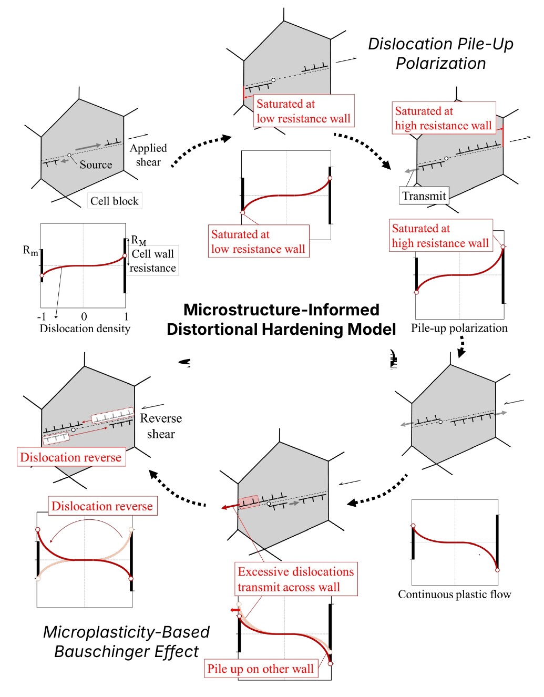
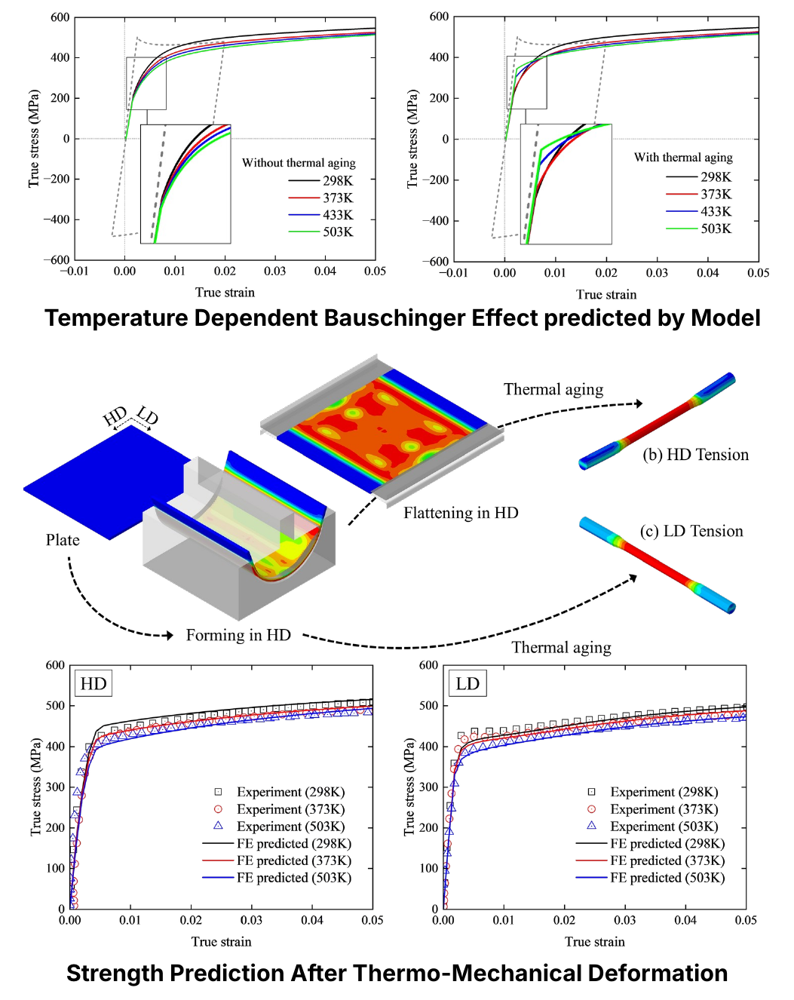

A constitutive modeling framework, coupled with an AI surrogate, that predicts thermo-mechanical strength and anisotropic hardening of steel through complex industrial forming.
Linepipe steel goes through cold forming, reverse loading and thermal exposure during pipe manufacturing and coating. This history produces directional hardening and temperature-dependent flow behavior, complicated by yield-point phenomena and dynamic strain aging. This work studies API X52 steel under reverse loading and thermal aging, focusing on how dislocation pile-up polarization drives the evolution of back stress.
The Bauschinger effect in linepipe steel changes with temperature and with thermal aging, and the aging response depends on the prior deformation. Aging after tension–compression prestrain recovers the reverse flow stress, while aging after tensile prestrain lowers the forward flow stress. Conventional phenomenological hardening models do not capture this coupling. The aim is a unified constitutive framework for anisotropic hardening, yield-point phenomena and dynamic strain aging under varying thermomechanical conditions.
Directional back stresses are related to the polarization of dislocation pile-ups at cell walls. A single-slip pile-up formulation is extended to a macroscopic evolution law within a distortional hardening framework. Temperature and aging enter through a temperature-dependent cell-wall resistance and a pseudo-thermal strain. The model is calibrated with elevated-temperature tensile tests and with tension–compression–aging–tension and tension–aging–tension tests on API X52, and implemented as a fully implicit user material subroutine.


The model reproduces the flow behavior of API X52 from 298 K to 503 K, including yield-point phenomena, dynamic strain aging and the evolution of the Bauschinger effect during aging. In simulations of sequential punch forming, flattening, thermal aging and tensile loading in the hoop and longitudinal directions, the predicted 0.2% offset yield stresses agree with experiments within a mean error of 3.4%.